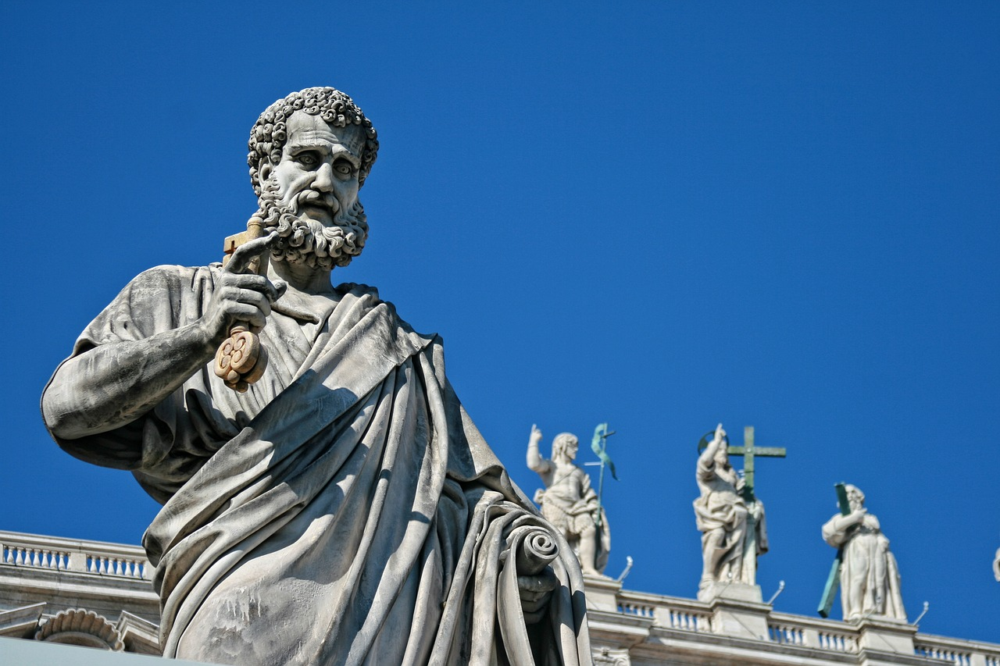
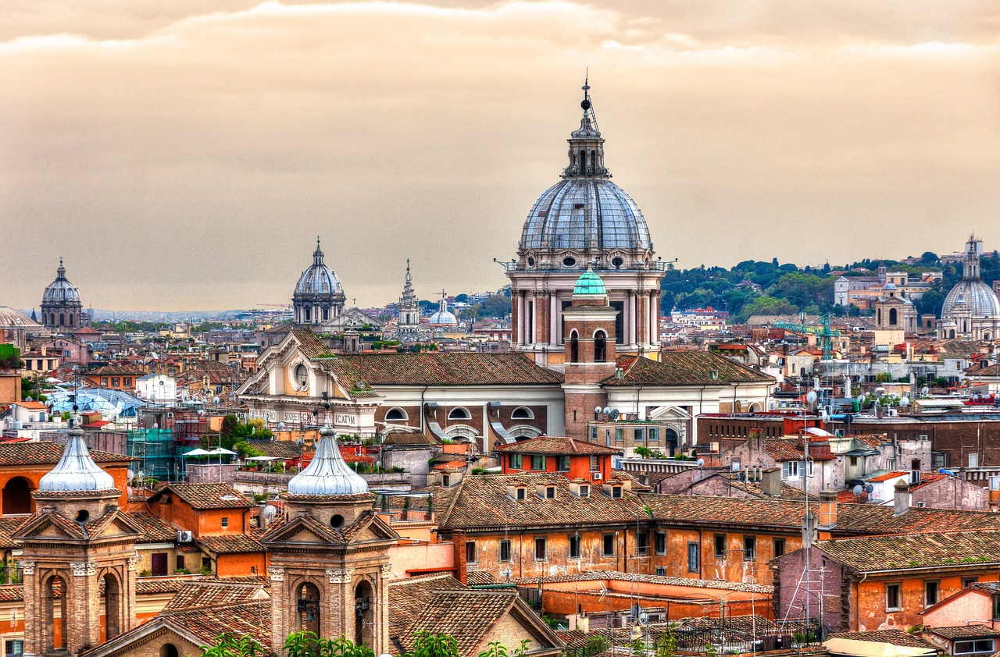

Roma
Roma se encuentra estratégicamente ubicada en la región central de Italia, a orillas del río Tíber, siendo la capital del país y un epicentro cultural y político desde tiempos antiguos. Fundada según la leyenda por Rómulo y Remo en el siglo VIII a.C., Roma floreció hasta convertirse en la capital de un vasto imperio que dominó gran parte de Europa, África y Asia. Su legado arquitectónico y cultural perdura hoy en día, desde el majestuoso Coliseo hasta el imponente Panteón y los vestigios de antiguas villas y templos que salpican la ciudad. En Roma, las posibilidades para disfrutar son tan variadas como fascinantes. Puedes explorar monumentos históricos como el Foro Romano, el Palatino y las Catacumbas para sumergirte en la rica historia y cultura de la región. Los callejones empedrados del Trastevere y las antiguas plazas como la Piazza Navona ofrecen una experiencia única, donde el tiempo parece detenerse entre la arquitectura medieval y las fuentes barrocas que adornan el paisaje urbano.

Para los amantes del arte, Roma alberga algunas de las galerías y museos más prestigiosos del mundo, como los Museos Vaticanos y la Galería Borghese, donde se puede admirar obras maestras de artistas como Miguel Ángel, Rafael y Bernini. Además, la Ciudad del Vaticano, el corazón espiritual y administrativo de la Iglesia Católica, es un lugar imperdible para los visitantes interesados en la religión y la historia. La gastronomía romana es una delicia para el paladar, con platos tradicionales como la pasta cacio e pepe, la pizza al taglio y el auténtico gelato italiano que se puede disfrutar en trattorias acogedoras y restaurantes con vistas impresionantes. Para los compradores, Roma ofrece desde boutiques de moda en Via del Corso hasta mercados callejeros como Campo de' Fiori y el Mercato di Testaccio, donde se pueden encontrar productos frescos y artesanías locales. En Roma, la moneda oficial es el euro (EUR). Se recomienda cambiar dinero en bancos autorizados o utilizar los numerosos cajeros automáticos disponibles en toda la ciudad para facilitar las transacciones financieras durante tu estancia. Las tarjetas de crédito son ampliamente aceptadas en hoteles, restaurantes y tiendas, proporcionando comodidad y seguridad en tus compras y pagos.
Es esencial verificar los requisitos de visa antes de viajar a Italia. La mayoría de los ciudadanos de la Unión Europea y muchos otros países disfrutan de la exención de visa para estancias cortas, mientras que otros pueden necesitar obtener una visa Schengen antes de la llegada. Verifica esta información con la embajada italiana o con tu agencia de viajes para asegurarte de tener la documentación adecuada antes de tu partida. Roma cuenta con un sistema de transporte público que incluye metro, autobuses y tranvías que facilitan el desplazamiento por la ciudad y sus alrededores. El metro conecta los principales puntos de interés, mientras que los taxis son una opción conveniente para moverse de forma rápida entre atracciones. Para una mayor flexibilidad, también puedes alquilar un coche y explorar los alrededores de la ciudad, desde las colinas de los Castelli Romani hasta las antiguas ruinas de Ostia Antica. En cuanto a la seguridad, Roma es generalmente segura para los turistas. Como en cualquier gran ciudad, se recomienda tomar precauciones básicas, como cuidar tus pertenencias personales y estar atento a tu entorno, especialmente en áreas concurridas y sitios turísticos populares. Las autoridades locales están comprometidas con garantizar la seguridad de residentes y visitantes, ofreciendo un ambiente acogedor para disfrutar al máximo de tu experiencia en la eterna Roma.
